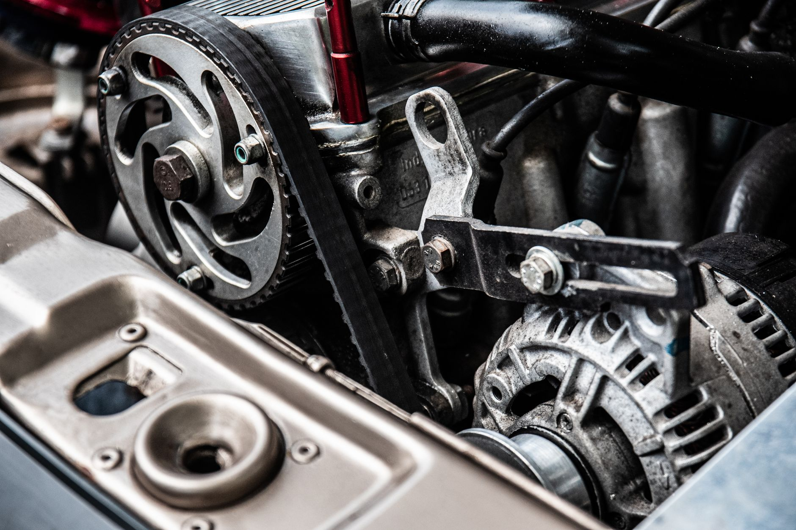
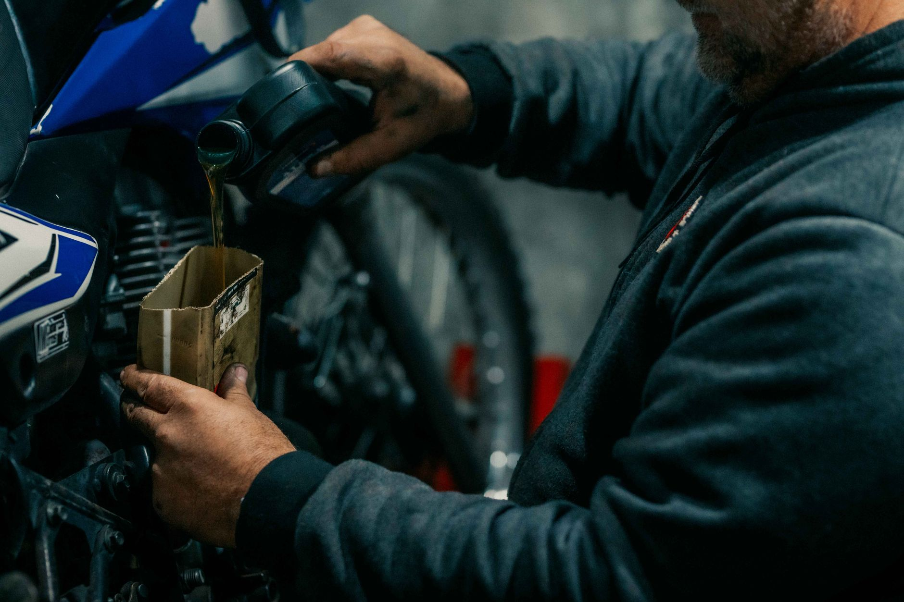
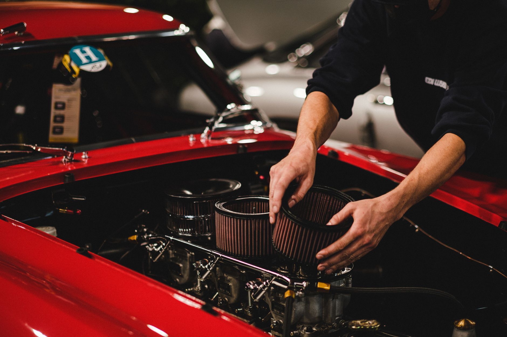
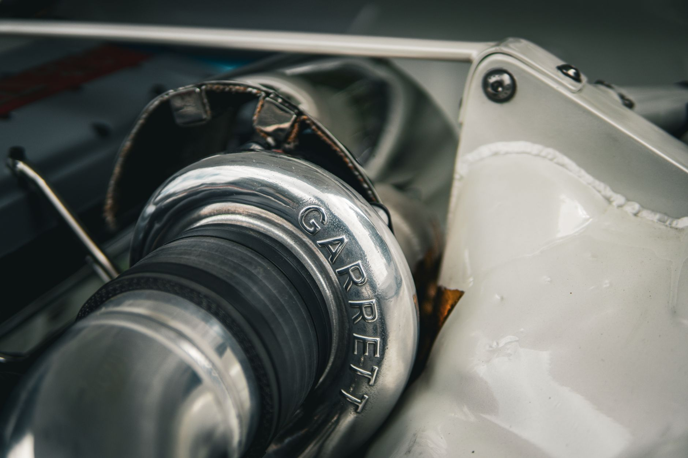
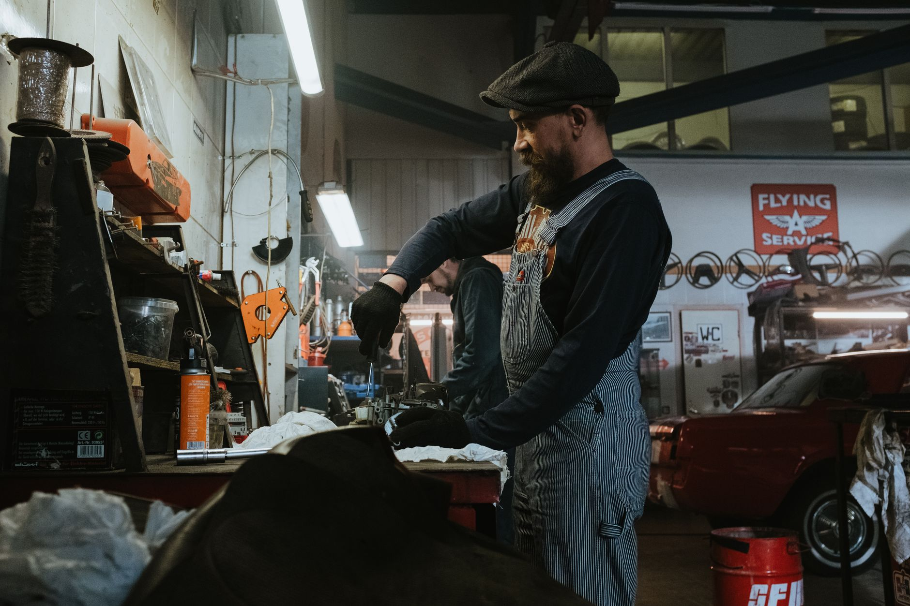
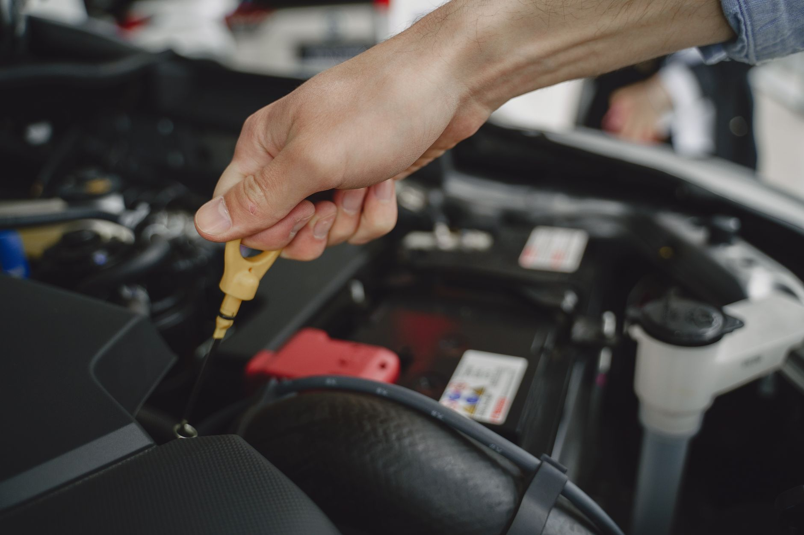

Оригінальні матеріали
Оливи та фільтри лише перевірених виробників — з гарантією походження.

Швидка та професійна заміна моторної оливи, масляних, паливних і повітряних фільтрів. Запис за часом — без черг та зайвого очікування.
FORMULA OIL — це сервіс, де кожна заміна проходить за чітким протоколом: підбір матеріалів під ваш двигун, контроль рівня рідин і безкоштовна діагностика ключових вузлів. Уважно, чесно та за розкладом.
Дізнатися більше про насОливи та фільтри лише перевірених виробників — з гарантією походження.
Перевіряємо рівень рідин, стан фільтрів і ключові вузли при кожній заміні.
Приїжджаєте до призначеної години — без черг та зайвого очікування.
Відповідаємо за результат: фіксована вартість і гарантія на виконані роботи.

01 · Оливавід 250 ₴Підбір і заміна оригінальної синтетичної чи напівсинтетичної оливи під ваш двигун та стиль їзди.

02 · Фільтривід 100 ₴Масляні, паливні, повітряні та салонні — перевірені виробники.

03 · ДіагностикабезкоштовноПеревірка рівня рідин, витоків і ключових вузлів при кожному візиті.

04 · Комплексвід 590 ₴Промивка мащення, заміна технічних рідин і планове ТО «під ключ».

Обладнаний бокс, професійний інструмент і майстри, які люблять свою справу. Поки ми доглядаємо ваше авто — ви відпочиваєте за кавою.
Приїжджаєте до призначеної години — жодних черг та втраченого часу.
Працюємо лише з якісними оливами й фільтрами перевірених виробників.
Фіксована вартість робіт, яку ви бачите заздалегідь. Без прихованих доплат.
Затишний простір і кава, поки ми доглядаємо ваше авто.

Десятки років сумарного досвіду й тисячі авто, яким ми продовжили життя.
Обираєте зручний час онлайн або телефоном за хвилину.
Майстер підбирає оливу та фільтри саме під ваш автомобіль.
Акуратна заміна за 15–25 хвилин з контролем якості.
Безкоштовна перевірка рідин і рекомендації на майбутнє.
Записався ввечері, приїхав вранці — за 20 хвилин усе зробили. Показали стару оливу, пояснили стан фільтрів. Дуже професійно.
Нарешті сервіс, де не треба сидіти в черзі пів дня. Все за часом, чисто, культурно. Кава поки чекаєш — приємна дрібниця.
Ціну назвали одразу й не змінили після роботи. Порадили, яку оливу краще лити наступного разу. Тепер обслуговуюсь тільки тут.
Дуже уважні хлопці. Перевірили не лише оливу, а й усі рідини. Знайшли невеликий витік, про який я навіть не знала.
Швидко, акуратно, без нав’язування зайвого. Саме те, що потрібно. Рекомендую всім знайомим.
Обслуговую тут два авто вже третій рік. Жодного разу не підвели. Завжди чесно й по совісті.
Приємно, коли до твоєї машини ставляться дбайливо. Все пояснили простими словами, показали, що і навіщо.
Зручний онлайн-запис, нагадали про візит. Заміна зайняла менше пів години. Сервіс на рівні.
Робили комплекс — олива і три фільтри. Ціна вийшла адекватна, а різницю в роботі двигуна було чути одразу.
Культура спілкування на висоті. Порадили інтервал заміни під мій стиль їзди. Дуже задоволена результатом.
Не знайшли відповідь? Зателефонуйте — підкажемо все за хвилину.

Оберіть зручний час — решту зробимо швидко, якісно та з турботою про ваш двигун.